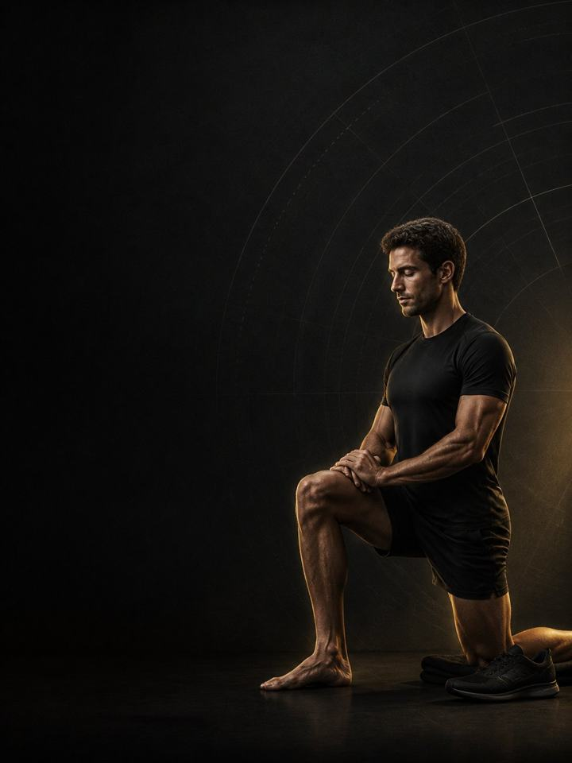

Endurance · Restore
A fortnight off costs you almost nothing. Racing tired all winter costs you a season.
- Built forrunners, cyclists and triathletes after their last race
- Training days2–3 gym days a week, with low running volume
- Session length51–58 minutes
- Equipmentfull gym with a barbell, machines and a step
- Formatmobile PDF, every exercise linked to a demo video
- Get all four blocks of this sport family for 119.990 KD (159.960 KD if bought separately).
- Coaching is currently full. Join the waiting list and this price comes off your first month when a seat opens.
The store opens soon. For now, Buy opens an Instagram message and you receive the PDF there.
Who it's for
Runners, cyclists and triathletes whose season has just ended.
The first two weeks of this block prescribe almost nothing, and that is the most important part of the program. Endurance athletes are bad at this. The fear of losing fitness is stronger than the evidence, and two weeks of real rest repay a whole season of accumulated tendon load, sleep debt and mental fatigue. After that, this is the one block of the year where the gym leads and the running follows. Volume comes back slowly, strength work rebuilds from a light base, and the imbalances that appear by the end of a season, a weaker side, a stiff hip, hamstrings that never got trained, are addressed while there is time and no race to protect.
Where it sits in the year: Block 4 of 4. Base, Build, Compete, Restore. Start it straight after your last race of the season. Then the year starts again with the Base block.
Your week
Weeks 1–2 are almost nothing: walk, swim easy, ride for fun if you want to. No structured running, no watch. From week 3 the gym sessions start.
| Sun | Mon | Tue | Wed | Thu | Fri | Sat |
|---|---|---|---|---|---|---|
| Day 1 | Easy | Day 2 | Rest | Day 3 | Easy | Rest |
Three gym days if your running volume is genuinely low. Drop to two, Day 1 and Day 2, as the mileage climbs back.
Every session runs the same way:
- Warm-up, 8–10 min. The full sequence, done properly. There is no rush in this block.
- Main lifts, 25–30 min. Higher reps than the rest of the year, moderate loads, full range.
- Single-leg and imbalance work, 10 min. Weaker side first, with an extra set until it matches.
- Tendon work, 8 min. Calf raises, Nordics and tibialis work. It never leaves.
Sessions here are longer than anywhere else in the year, because for once they are not competing with hard running for your recovery.
How the 12 weeks progress
Short breaks cost far less than athletes fear. Two weeks without training produces only a small, quickly recovered drop in aerobic fitness, while the tissues that took a season of repeated loading need exactly that kind of unloading to reset. Strength fades more slowly than most people expect, which is why it rebuilds easily from week 3. The second reason this block exists is asymmetry. Side-to-side differences in strength and single-leg capacity widen across a season, and they close far faster when there is no racing to protect.
Three phases: nothing, then general strength, then a handover into the next Base block. Reps are higher and loads lower than anywhere else in the year, because the goal is tissue quality and symmetry, not maximum force.
| Weeks 1–2 | Weeks 3–8 | Weeks 9–12 | |
|---|---|---|---|
| Phase | Tissue recovery | Structural capacity | Force production |
| Goal | Let muscle and tendon recover after the season | Rebuild muscle, joint range and left-right symmetry | Rebuild maximal strength towards Base block loads |
| Looks like | No structured training. Walk, swim easy, ride for enjoyment, play a different sport badly | Sets of 8–12, moderate loads, full range. Weaker side first | Reps fall, loads climb, and the sessions start to look like the Base block |
| Gym days per week | rest weeks | 3 | 2 |
| Working sets per week | rest weeks | 51 | 34 |
| Average effort | rest weeks | RPE 6.1, about 4 reps in reserve | RPE 7.1, about 3 reps in reserve |
| Landings per week | rest weeks | 60 | 95 |
The block at a glance
Working sets per week, by what they train. The dashed line is effort.
Where this block sits in the training year
Run the four blocks in order and they make a full training year.
RPE is effort rated out of 10. Reps in reserve is how many more good reps you could have done, so "about 3 reps in reserve" means about 3 reps left in the tank.
The rules that make it work
- The first two weeks are the program. Almost nothing, on purpose. Two weeks off costs a small, quickly recovered amount of aerobic fitness, and repays a season of tendon load and mental fatigue.
- Rebuild the gym before the mileage. This is the only block where strength leads. Running volume returns at about ten per cent a week underneath it, not faster.
- Weaker side first, extra set. Asymmetry widens across a racing season and closes fastest when nothing is being protected. Every single-leg exercise starts with the weaker side.
- Higher reps, lower loads. Sets of 8–12 in the structural capacity phase. The goal is tissue quality and range. Force is the job of the next blocks.
- Fix the lingering aches now. Anything you raced through gets addressed here, alongside the matching AXIS corrective program. There is no better window in the year.
Terms
- Block: 12 weeks. This program. One block develops one set of qualities to a set standard.
- Phase (mesocycle): Each phase targets one quality. Here they run two, six and four weeks. The length follows the goal.
- Training week (microcycle): where effort climbs, sets are added and the deload lands.
- Training year (macrocycle): four blocks in order (Base, Build, Compete, Restore), about 48 weeks.
How you'll measure progress
You retest in week 3, when the program actually starts, not before. You retest again in week 12, and those numbers are where the next year begins. Each training week also starts with a 90-second check: three standing broad jumps at the start of Day 1, keeping the best. More than 10 per cent below your own rolling average means that day is reduced. The power work comes out and each lift loses one set, whatever the page says.
What good progress looks like
- Weeks 1–2: it will feel like you are losing everything. You are not. Two weeks costs a fraction of what a season of accumulated fatigue does.
- Weeks 3–8: strength returns faster than it was first built, and the side-to-side gaps close quickly.
- Weeks 9–12: loads approach where the next block picks them up, and running volume is back to a normal base.
The best sign this block worked is starting the next Base block with no lingering aches and no asymmetry.
Respect the week
Count everything: training sessions, gym and sleep. Sudden jumps in weekly workload are the most reliable predictor of injury in amateur sport. In a heavy training week, drop a gym session or cut the power work, but never cut both the training and the recovery. Protect 7–9 hours of sleep. It is the most powerful performance tool available, and the cheapest.
The science
Every program in the library is built on published research, and how strong that research is gets stated, not implied. Where the evidence is limited, the page says so.
| Finding | Source | What it does not show |
|---|---|---|
| Strength training cuts sports injuries to under a third of the control rate. Stretching does not reduce them. | Lauersen, Bertelsen & Andersen, Br J Sports Med 2014. Meta-analysis of 25 RCTs, 26,610 participants. PMID 24100287 | Risk ratio 0.32 for strength training and 0.96 for stretching. The trials varied a lot, and dose was not standardised. |
| Lower-limb tendon pain responds to progressive loading. Which progression rule works best is not established. | Escriche-Escuder, Casaña & Cuesta-Vargas, BMJ Open 2020. Systematic review, 30 RCTs in Achilles, patellar and gluteal tendinopathy. PMID 33444210 | Most programs progress on pain, and that practice is not supported by strong evidence. Credit the loading, not a particular tempo. Eccentric-only work has not been shown to be superior. |
| Programs that include the Nordic hamstring exercise roughly halve hamstring injuries. | van Dyk, Behan & Whiteley, Br J Sports Med 2019. Meta-analysis, 15 studies, 8,459 athletes. PMID 30808663 | Risk ratio 0.49. The effect shrinks but survives when the eight high-risk-of-bias studies are removed (0.55). It measures programs that include the exercise, not the exercise alone. |
| Every sensible prescription beats not training. Heavier loads rank highest for strength. Multiple sets rank highest for muscle size. | Currier et al., Br J Sports Med 2023. Network meta-analysis, 178 strength and 119 hypertrophy studies. PMID 37414459 | The differences between prescriptions were small, and all of them worked. |
What's next
After 12 weeks:
- Start the next year: Endurance · Base
- Something you raced through: the Corrective series
Want it built around you? One-to-one coaching through the Trainerize app: programming shaped by your goal, schedule and history, video review of your technique, and weekly adjustments. Coaching is limited to about ten athletes at a time and is currently full. Join the waiting list and you will be contacted when a seat opens.
Before you buy: get cleared first if
- You have chest pain, unusual breathlessness, palpitations or dizziness with exertion.
- You have uncontrolled high blood pressure, a known heart condition, or recent surgery.
- You are pregnant or recently post-partum. Get clearance and a tailored program first.
- You have sharp joint pain in one spot that won't settle. Start with the matching AXIS corrective program.
This program is general fitness guidance. It does not replace a medical assessment.
- Get all four blocks of this sport family for 119.990 KD (159.960 KD if bought separately).
- Coaching is currently full. Join the waiting list and this price comes off your first month when a seat opens.
The store opens soon. For now, Buy opens an Instagram message and you receive the PDF there.